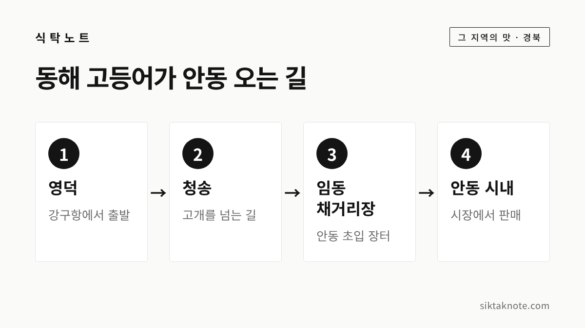
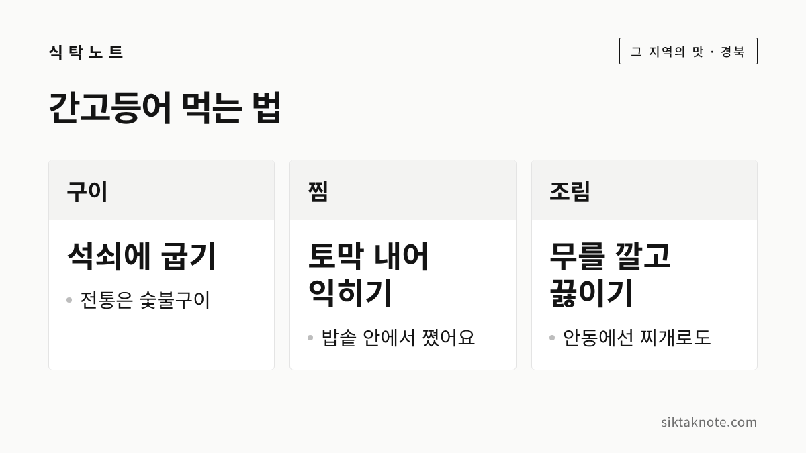

안동 간고등어 이야기 — 영덕에서 안동까지 이틀, 소금이 지켜 준 고등어

3줄 요약
- 안동은 내륙이라 동해안 영덕에서 고등어를 지고 오며 소금을 쳤고, 그게 간고등어가 됐다고 전해져요.
- 한국관광공사는 영덕 강구항에서 안동 채거리장까지 이틀이 걸렸다고 소개합니다.
- 1970년대 냉동 저장법이 퍼지며 염도가 낮아졌고, 1999년 포장 제품이 나오면서 지역 특산으로 알려졌습니다.
바다 없는 안동에 고등어가 있는 까닭
안동에는 바다가 없는데요. 그런데도 간고등어는 안동을 대표하는 음식으로 꼽힙니다. 상하기 쉬운 고등어를 내륙까지 가져오려면 소금이 꼭 필요했고, 그렇게 소금을 친 고등어가 지금의 간고등어가 되었다고 전해져요. 오늘은 영덕에서 안동까지 이틀 길을 따라가 보면서, 간잽이 이야기와 먹는 법까지 하나씩 풀어 보겠습니다.

동해에서 안동까지, 이틀 길
한국민족문화대백과사전은 간고등어가 언제부터 있었는지 정확히 알기는 어렵다고 설명합니다. 다만 바다가 있는 영덕에서 안동까지 보부상이 생선을 공급하던 조선시대부터 있었다고 본다고 해요. 동해에서 잡은 고등어는 영덕에서 청송을 지나 안동 임동면의 채거리장, 그리고 안동 시내로 들어왔다고 합니다.

한국관광공사 기사에는 이런 문장이 있습니다. "영덕 강구항에서 안동 채거리장까지 고등어를 운반하는 데에 이틀이나 소요되다 보니, 고등어를 상하지 않게 하려면 소금간이 필수적이었다." 디지털안동문화대전도 안동에서 가장 가까운 바다인 영덕과도 하루 이상 걸렸다고 적어요.
다만 길이 얼마나 되는지는 보도마다 달라서 거리 숫자는 적지 않았습니다. 일수도 이틀이라는 소개가 여럿이지만 꼬박 하루가 걸렸다고 쓴 기사도 있으니, 이틀은 대표적으로 전해지는 이야기로 봐 주시면 좋겠습니다.
남해에서 올라온 고등어도 있었는데요. 대백과 설명으로는 낙동강 물길로 왜관까지 오고, 안동 풍천면의 구담장을 거쳐 육로로 안동시까지 들어왔다고 합니다.

소금은 언제 쳤을까
한국관광공사 기사는 소금간을 하는 방법이 대체로 세 가지라고 소개해요. 고등어를 잡자마자 배에서 간하는 방법, 포구에 도착해서 간하는 방법, 내륙의 소비지로 운반해서 간하는 방법입니다. 안동은 바다에서 멀다 보니 어느 쪽이든 길 위에서 상하지 않게 하는 게 중요했던 셈이죠.
이동 중 어느 지점에서 소금을 쳤는지는 전하는 이야기마다 조금씩 다릅니다. 서울신문 보도에서는 상하기 직전에 소금을 뿌렸다고 했고, 또 다른 기사에서는 배를 갈라 굵은 소금을 뿌린 고등어가 안동에 닿아 바람과 햇볕에 숙성되며 간이 배었다고 설명해요. 디지털안동문화대전은 소금에 절인 고등어가 하루가 지나면 적당히 발효되고 간이 배어 맛이 좋았다고 풀이합니다.
소금은 서해안 천일염이었다고 알려져 있어요. 부산을 거쳐 낙동강 배편으로 안동 개목나루까지 올라왔고, 그래서 동해의 고등어와 서해의 소금이 안동에서 만났다고들 이야기합니다.

간잽이, 소금 치는 사람
간잽이는 고등어에 소금을 치는 사람입니다. 대백과에는 간고등어를 '간잽이 고등어', '얼간잽이 고등어'라고도 불렀다고 나와요. 이름 그대로 간을 잡아 주는 일이 이 음식의 핵심이었다는 뜻이겠지요.
서울신문은 예로부터 간잽이가 어물전의 흥망을 좌우할 만큼 중요한 자리로 여겨졌다고 전합니다. 소금 양도 정해진 공식이 없었다고 하는데요. 매일신문 보도에 따르면 고기의 크기와 무르기, 날씨에 따라 매번 달랐고 손목 감각으로 소금을 쳤다고 해요. 많지도 적지도 않게 골고루 간이 배도록 하는 게 간잽이의 솜씨였다는 이야기입니다.

선비 밥상부터 장바구니까지
디지털안동문화대전에 따르면 간고등어는 안동 사람들에게 비교적 흔하고 값싸게 먹을 수 있는 대표 생선이었어요. 그러면서도 가난한 선비에게는 고급 반찬이었다는 설명이 있고, 혼례와 상례, 제례는 물론 생일이나 회갑잔치에도 자주 올랐다고 합니다. 한국관광공사 기사에는 안동의 헛제사밥 상에 간고등어와 탕국이 함께 오른다는 소개도 있습니다.
대백과는 냉동 저장이 일반화되기 전에는 안동의 웬만한 집이 손님 접대를 위해 소금 독에 간고등어를 넣어 두었다고 설명해요. 장에서 한 손씩 사 들고 오는 어른들의 모습도 흔했다고 합니다. 한 손은 고등어 두 마리를 말하는데요. 배를 갈라 내장을 빼고 왕소금을 듬뿍 쳐서 두 마리를 한 손씩 끼워 숙성시켰다고 합니다.

지역 특산이 되기까지
대백과를 보면 1970년대 냉동 저장법이 퍼지면서 간고등어의 염도가 낮아지기 시작했어요. 1999년 8월에는 진공 포장한 안동 간고등어를 만드는 회사가 안동에 세워졌고, 이 무렵부터 안동의 특산으로 적극 알려지기 시작했다고 합니다. 언론 보도로는 2000년을 앞두고 새 특산품으로 떠오르며 전국 식탁에 오르기 시작했다고 해요.
고등어가 잡히지 않는 안동이 간고등어로 유명해진 배경도 대백과가 짚습니다. 내륙이라는 지리적 조건, 제사 같은 의례 음식으로 쓰인 점, 고향을 떠난 사람들의 향수, 안동국제탈춤페스티벌 이후 안동 고유의 문화를 발굴하려던 분위기가 함께 꼽힌다고 해요. 그 뒤로 간고등어는 선물과 기념품으로 파는 포장 제품과, 어물전에서 파는 비포장 제품으로 나뉘었다고 합니다.
옛날 간고등어보다 요즘 제품이 덜 짠 이유가 여기에 있습니다. 다만 제품마다 염도가 다르니 포장에 적힌 안내를 확인하시는 게 좋겠습니다.
구이, 찜, 조림으로 먹어요

대백과에 소개된 전통 조리법은 세 가지입니다. 구이는 석쇠에 올려 숯불에 굽는 방법이고, 찜은 토막 내어 그릇에 담아 가마솥 밥솥 안에서 익히는 방법이에요. 찌개는 무 같은 채소를 넣고 양념해서 끓이는 방법입니다. 한 언론은 고추장을 발라 구운 고갈비와 풋고추, 마늘을 넣은 찜도 소개했습니다.
집에서는 무를 깔고 간고등어를 올린 뒤 물을 자작하게 붓고 졸이는 무조림이 만만합니다. 이미 간이 되어 있으니 양념은 처음부터 많이 넣지 말고 끓이면서 맛을 보며 더하시는 게 좋겠습니다. 이건 제 제안이에요.
집에서 구울 때 요령 두 가지
숯불이 없어도 집에서 충분히 맛있게 구울 수 있어요. 한 요리 영상의 진행자가 설명한 방법과 기본 상식을 바탕으로 두 가지만 꼽아 봤습니다.
- 물기를 닦고 소금은 더 치지 않기: 표면의 물기를 키친타월로 닦아 주면 구울 때 기름이 덜 튀어요. 간고등어는 이미 간이 되어 있으니 소금은 더하지 않습니다.
- 껍질 쪽부터 중약불에서 천천히: 껍질 쪽부터 올려 구우면 살이 덜 들러붙고 겉이 바삭하게 익는다고 합니다. 뒤집개로 자주 뒤집지 말고, 한 번만 뒤집는 게 모양이 덜 부서져요.
이틀 길이 남긴 짭짤한 맛
영덕에서 안동까지 이틀이 걸렸다는 이야기, 소금 하나로 고등어를 지켜 낸 지혜가 간고등어의 시작이라고 전해집니다. 다만 거리와 일수, 소금을 치던 때는 자료마다 조금씩 달라서 어느 하나를 정설로 보기는 어려웠습니다.
생고등어를 사다 먹을 때는 생선 비린내 손질하고 보관하는 법을 함께 보시면 좋겠습니다. 경남의 향토음식이 궁금하시면 진주냉면과 진주비빔밥 이야기도 이어서 읽어 보세요.
이야기는 한국민족문화대백과사전, 디지털안동문화대전, 한국관광공사와 언론 보도에서 확인되는 내용을 바탕으로 했어요.